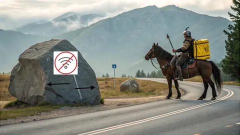

А помните те времена, когда не было смартфонов, мобильных Яндекс Карт, спутниковой навигации в кармане? Я помню, потому что в 2006 году работал курьером в небольшом магазинчике на Горбушке. Выглядело это так. Я на складе получал заказ, на десктопе открывал нужный тайл в Картах, распечатывал его на принтере, в половине случаев забывал распечатку, и ехал доставлять по памяти, зная только адрес. И знаете, не было ни одного недоставленного заказа.
Сейчас же, когда в Москве шалит gps, люди оказываются абсолютно беспомощны. Даже такси фиг закажешь. Что уж там, я сам за последний месяц дважды промахивался поворотом, излишне полагаясь на навигатор. Навык ориентирования на местности постепенно отмирает. Видимо, как навыки разведения костра палкой или вычесывания блох. Хотя олды типа меня все еще не так безнадежны.
Я пару раз проводил эксперимент с ориентированием в путешествиях. Есть на земле потрясающий город, который я очень люблю - Прага. Я там был то ли 4, то ли 5 раз - ну нравится, что поделать. Много там гулял и хорошо его запомнил. Так вот в позапрошлый раз я, ради эксперимента, не стал пользоваться картами в телефоне, а всю поездку ходил по бумажной карте, просто чтобы убедиться, что этот навык не утерян. А в прошлый раз и вовсе почти обошелся без какой-либо карты, просто по памяти находил все, что было нужно.
Зато для курьеров Еды мы расстарались на славу. И глушение gps уже почти не мешает корректному определению положения, и indoor-навигацию по ТЦ запустили, и маршруты строятся с учетом способа передвижения (включая велосипеды/самокаты). Да что уж там, мы ведь даже свой велосипед создали (не в том смысле, что еще один фреймворк или БД, а натурально - электровелосипед для курьеров). Потому что от этого зависит эффективность логистики, а это важно для бизнеса и для самих курьеров.
Да, курьерство уже не то, что раньше. С другой стороны, я доставлял за день заказов 5, а курьеры Еды - 25. Или больше, точно не знаю. Но в любом случае наши технологии позволяют осуществлять логистику кратно эффективней, чем раньше. Диспатч находит оптимальные для системы назначения, сурж - балансирует спрос и предложение, чтобы максимизировать вывоз. Магия!
Поэтому я люблю наши выходы "в поля". Мы периодически командами разработки, продукта, операций устраиваем догфудинг - идем на день покурьерить, чтобы прочувствовать на своей шкуре все нюансы работы нашего сервиса от лица курьеров. И каждый раз приносим оттуда тьму идей, что еще можно улучшить или починить. Кстати, давно что-то не ходили, да и на байке мне пока не довелось покататься. Надо бы запланировать.
